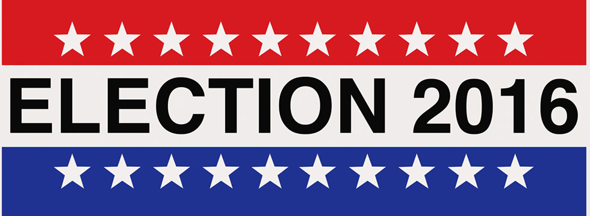
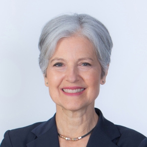

The U.S presidental race has gotten more intense than ever, and it's incredibly important that we all become educated on the subject. To get started, read our brief rundown of events below, then start to play PoLITics to learn more!
As of July, 15, 2016 Democrat Hillary Clinton and Republican Donald Trump seem to be the most likely to win the presidency. The two are the only candidates left standing from the two major parties. Green Party candidate Jill Stein and Libertarian Gary Johnson are also in the race.
 |
Hillary Clinton is Senator of New York, formerly a lawyer and first lady. Currently backed by current president Barack Obama and former Democratic candidate Bernie Sanders. Clinton would be the first female U.S. president if she wins the election. Clinton's website describes some of the issues she plans to change, including education, women's rights, LGBT+ rights, healthcare and racial justice. She is mainly supported by older women, but younger women are beginning to support her as well. She is also supported by various ethnic groups, and has been supported financially.
Donald Trump is a successful businessman, reality TV star and self-proclaimed billionaire. He has many senators, former Vice Presidents, and other political figures supporting him financially. In regards to the general population, Trump supporters tend to be older people with mixed backgrounds. However, it should be noted that many are women. Trump's website describes some of the issues he plans to improve and change, including healthcare reform, immigration reform and Second Amendment rights. As of recently Trump has announced that his running mate will be Mike Pence, governor of Indiana.
Jill Stein is a practicing physician and author. Like Clinton, she would be the first female U.S. president if elected. Stein's website describes her platform, which is based on reversing climate change, preserving natural resources, ensuring that future generations have rights, ending poverty, providing jobs to all, enforcing education, and promoting equality. Many of her supporters are young people and older women.
Gary Johnson is a businessman and former Governer of New Mexico. His platform is based on reducing national debt, reducing the cost of healthcare and Second Amendment rights, among other issues. William Weld is Johnson's running mate and Governer of Massachusetts.
The final election is set to take place in November of 2016.
Still interested? Download PoLITics or see some of links up above!
PoLITics is an application designed to help young people understand how politics affects their daily lives. The app includes two games, one involving trivia (and more serious issues), and the other being more lighthearted and fun.
This issue is important to us because many young people today remain unaware of what is going on around them. Young people have become increasingly detatched from politics, often leaving it to the older generation to decide. With the fate of our nation in our hands, we need to understand the weight of our decisions. We need to know about the people who could and will run our country, and the consequences of their actions in the future.